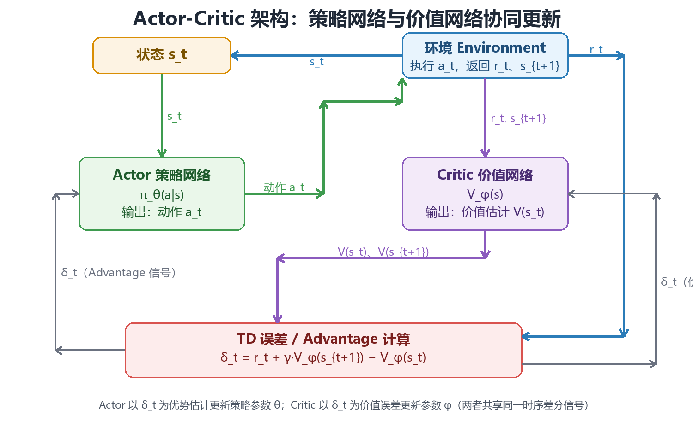

策略梯度与 Actor-Critic（Policy Gradient & Actor-Critic）
前几章的动态规划、蒙特卡洛与时序差分方法都属于基于价值（value-based） 路线：先学会估计价值函数 \(V\) 或 \(Q\)，再从价值中隐式地导出策略 （\(\epsilon\)-greedy、\(\arg\max\)）。本章换一条完全不同的路线——基于策略 （policy-based）：把策略本身参数化为 \(\pi_\theta(a|s)\)，直接对"期望回报" 这个目标函数求梯度，用梯度上升（gradient ascent）优化策略参数 \(\theta\)。 这条路线引出了强化学习中最重要的一族算法：策略梯度定理（Policy Gradient Theorem）、REINFORCE、带基线的策略梯度、Actor-Critic 架构，以及当代深度 强化学习的默认选择——TRPO 与 PPO（近端策略优化），配合广义优势估计 （GAE）解决方差问题。本章是连接"表格型强化学习"与"深度强化学习实战"的 桥梁，也是理解大语言模型 RLHF（PPO 变体）的理论基础。全文假设读者已掌握 第 2~4 章（DP / MC / TD）的内容；所有代码均为可运行的 Python 3 + NumPy 实现， 不依赖任何深度学习框架。
一、从值函数到策略搜索
1.1 策略的参数化表示
表格型方法把策略存成一张表：每个状态 \(s\) 对应一个概率分布 \(\pi(a|s)\)。 当状态空间庞大（图像、连续向量）时，表无法穷举，必须用参数化策略 （parameterized policy）来压缩表示：
其中 \(\theta\) 是策略参数（神经网络权重、线性层系数等）。给定状态 \(s\)， 策略网络输出一个动作分布，而非单一动作。两种最常用的输出形式：
离散动作：softmax 策略
其中 \(h(s,a;\theta)\) 是"动作偏好"（action preference）得分函数，通常是 神经网络的输出。softmax 保证所有动作概率为正且和为 1。
连续动作：高斯策略
均值 \(\mu_\theta(s)\) 由网络输出，协方差 \(\Sigma_\theta(s)\) 可以是固定常数、 对角矩阵或由网络输出的对数方差。高斯策略天然是随机策略（stochastic policy），通过采样得到动作 \(a_t \sim \pi_\theta(\cdot|s_t)\)。
核心思想：策略参数化把"找最优策略"这个组合优化问题（在指数级策略 空间中搜索）转化成了"找最优参数 \(\theta\)"这个连续优化问题（对参数求梯度）。 这正是策略梯度方法能够处理高维、连续状态与动作空间的根本原因。
1.2 为什么需要策略梯度
基于价值的方法（Q-Learning、DQN 等）在以下三类场景中会遭遇结构性困难， 而策略梯度天然规避了它们：
| 场景 | 基于价值方法的困难 | 策略梯度的优势 |
|---|---|---|
| 连续动作空间 | \(\arg\max_a Q(s,a)\) 需要在无穷多个动作上求最大值，不可行 | 直接输出动作分布的参数（均值、方差），采样即得动作 |
| 随机最优策略 | \(\epsilon\)-greedy 是"带噪声的确定性策略"，无法表达"以 60% 概率出剪刀"这类最优随机策略 | 参数化策略天然输出概率分布，可精确逼近最优随机策略 |
| 策略简单、价值复杂 | 为得到简单策略（如"靠近墙就走"）却要精确拟合整个价值函数，浪费容量 | 直接拟合策略本身，参数规模与策略复杂度匹配 |
| 策略不可微的中间环节 | 需要价值函数的 \(\arg\max\) 作为动作选择，该操作不可微 | 全程只依赖 \(\nabla_\theta \log \pi_\theta(a\|s)\)，可端到端求导 |
此外，策略梯度方法在理论上有两个好性质：
- 更强的收敛保证：在适当的学习率下，策略梯度保证收敛到局部最优策略 （价值方法中 Q-Learning 的收敛性需要查表或严格的条件）；
- 天然的探索机制：随机策略的方差本身提供了探索，无需显式的 \(\epsilon\)-greedy 或熵奖励（虽然实践中常额外加熵奖励）。
1.3 基于价值 vs 基于策略：全面对比
| 维度 | 基于价值（Value-based） | 基于策略（Policy-based） | 两者结合（Actor-Critic） |
|---|---|---|---|
| 学习对象 | \(V(s)\) 或 \(Q(s,a)\) | \(\pi_\theta(a\|s)\) | 策略 + 价值 |
| 动作选择 | 由价值导出（\(\arg\max\)、\(\epsilon\)-greedy） | 从策略分布采样 | 从策略分布采样 |
| 连续动作 | 困难（最大化不可行） | 自然支持 | 自然支持 |
| 随机策略 | 只能近似（\(\epsilon\)-greedy） | 精确表达 | 精确表达 |
| 收敛性 | 非线性逼近时可能发散 | 保证收敛到局部最优 | 实践中稳定 |
| 样本效率 | 高（价值可复用、off-policy） | 低（on-policy，回合制更新） | 中（TD 误差即时更新） |
| 方差 | 低 | 高（回报随机性直接进入梯度） | 中（Critic 压低方差） |
| 偏差 | 无偏（查表时） | 无偏（REINFORCE） | 有偏（Critic 不精确） |
| 典型算法 | SARSA、Q-Learning、DQN | REINFORCE | A2C、A3C、PPO、SAC |
| 代表应用 | 棋类、Atari 游戏 | 连续控制（早期） | 机器人控制、RLHF、游戏 AI |
核心思想：纯价值方法与纯策略方法各有短板——价值方法不会用连续动作、 难表达随机策略；策略方法方差大、样本效率低。Actor-Critic 把两者缝合： Actor（策略网络）负责决策，Critic（价值网络）负责给 Actor 的每个动作打分， 用低方差的 TD 信号替代高方差的完整回报。当代主流深度强化学习算法 （A2C、PPO、SAC、TD3）几乎全部属于 Actor-Critic 家族。
1.4 策略梯度方法谱系
本章将沿着下面的演化路线展开，每一条边都对应一个"修补上一代缺陷"的动机：
REINFORCE（蒙特卡洛策略梯度）
│ 缺陷：方差太大，必须等回合结束
▼
策略梯度 + Baseline（减去价值基线）
│ 缺陷：基线本身仍需估计，且只用回报不用 TD
▼
Actor-Critic（用 Critic 的 TD 误差代替回报）
│ 缺陷：单步更新步长敏感，策略可能剧烈震荡
▼
TRPO（信任区域：KL 散度约束步长）
│ 缺陷：共轭梯度求解复杂、实现困难
▼
PPO（裁剪目标：一阶近似 TRPO，实现极简）
│ 配套：GAE 广义优势估计压低方差
▼
当代默认配置：PPO + GAE + entropy bonus + 价值函数共享
其中 REINFORCE 与"策略梯度定理"是理论地基（第 2、3 章），Baseline 与 Advantage 是方差控制的第一层（第 4 章），Actor-Critic 是架构升级（第 5 章）， TRPO/PPO 是稳定性升级（第 6 章），GAE 是方差控制的第二层（第 7 章）， 第 8 章给出完整的实战配置与可运行实验。
二、策略梯度定理
2.1 目标函数：优化什么？
策略梯度是梯度上升：\(\theta \leftarrow \theta + \alpha \nabla_\theta J(\theta)\)。 第一步要明确目标函数 \(J(\theta)\) 的定义。强化学习中有三种等价的表达形式：
| 形式 | 定义 | 适用场景 |
|---|---|---|
| 起始值（start value） | $J_1(\theta) = V^{\pi_\theta}(s_0) = \mathbb{E}{\pi\theta}\left[\sum_{t=0}^{\infty}\gamma^t R_{t+1} \,\middle | \, s_0\right]$ |
| 平均奖励（average reward） | \(J_{avR}(\theta) = \sum_s d^{\pi_\theta}(s) \sum_a \pi_\theta(a\|s) \mathcal{R}_s^a\) | 持续任务（continuing），无终止状态 |
| 平均价值（average value） | \(J_{avV}(\theta) = \sum_s d^{\pi_\theta}(s) V^{\pi_\theta}(s)\) | 理论分析，与 \(J_{avR}\) 等价（差常数） |
其中 \(d^{\pi_\theta}(s)\) 是策略 \(\pi_\theta\) 下的稳态状态分布 （stationary distribution，或回合制下的折扣状态分布）。三者对 \(\theta\) 的梯度在"每步收益的期望"意义上是一致的，策略梯度定理对三者统一成立。 后续推导以最常见的起始值形式为例：
2.2 为什么梯度不能直接求：两个耦合的依赖
如果直接对 \(J(\theta)\) 求导，会撞上两个耦合依赖：
- 策略依赖：\(\pi_\theta(a|s)\) 显式地依赖 \(\theta\)；
- 状态分布依赖：\(d^{\pi_\theta}(s)\) 也依赖 \(\theta\)——策略一变，访问 各个状态的频率就变，而 \(d^{\pi_\theta}\) 是无穷嵌套的转移概率之积：
对 \(d^{\pi_\theta}\) 求导会引发对 \(\theta\) 的无穷递归——这就是"直接求导 不可行"的本质困难。策略梯度定理的威力在于：它证明了 \(\nabla_\theta J\) 可以只通过 \(\nabla_\theta \log \pi_\theta(a|s)\) 表达，而状态分布 \(d^{\pi_\theta}\) 的梯度项在期望意义下恰好被消去，不需要对 \(d^{\pi_\theta}\) 求导。
2.3 似然比技巧：∇log π 从哪来
先看一个基础恒等式——似然比（likelihood ratio），又称 score function：
两边同除 \(\pi_\theta(a|s)\) 即得。于是"对概率求梯度"等价于"概率 × 对对数 概率求梯度"。这个技巧的意义在于：\(\nabla_\theta \log \pi_\theta(a|s)\) 不依赖环境动态（\(P\)、\(R\)），只依赖策略网络本身，因此可以反向传播计算。 在期望中，它把"对分布的梯度"转化为"对样本的加权梯度"：
这一行正是策略梯度一切推导的发动机——它允许我们把梯度"搬进"期望内部， 从而用蒙特卡洛采样估计梯度，完全绕开环境模型。
2.4 策略梯度定理：核心公式
定理（策略梯度定理，Sutton et al., 1999）：对任意可微参数化策略 \(\pi_\theta\)，起始值目标函数 \(J(\theta) = V^{\pi_\theta}(s_0)\) 的梯度为：
直观推导（两层展开，理解"状态分布项如何消去"）：
第 1 层：把 \(V^{\pi}(s)\) 按动作展开并求导：
第 2 层：把 \(Q^{\pi}(s,a) = \mathcal{R}_s^a + \gamma \sum_{s'} P(s'|s,a) V^{\pi}(s')\) 代入第二项，得到对后继状态价值梯度的折扣递归：
关键一步：把递归展开 \(k\) 层后，第 \(k\) 层的系数是"从 \(s\) 出发恰好 \(k\) 步到达 \(s'\) 的概率"乘 \(\gamma^k\)——即折扣状态分布 \(d^{\pi_\theta}\)。将所有 层求和并利用 \(\sum_a \nabla_\theta \pi_\theta(a|s) = \nabla_\theta 1 = 0\)， 从 \(s_0\) 出发的梯度最终收敛为：
再用似然比技巧 \(\nabla_\theta \pi_\theta = \pi_\theta \nabla_\theta \log \pi_\theta\) 并改写成期望，即得到定理的公式形式。状态分布的梯度项从未出现——它被 "从 \(s_0\) 出发的折扣状态分布"这一权重吸收掉了，这就是定理的全部魔力。
2.5 两类常用策略的 ∇log π 具体形式
实际编程时，\(\nabla_\theta \log \pi_\theta(a|s)\) 由自动微分给出，但了解其 解析形式有助于理解梯度方向：
softmax 策略（离散）：设 \(h(s,a;\theta)\) 为动作偏好，则
即"所选动作的得分梯度 − 所有动作得分的期望梯度"。梯度推动所选动作的 偏好上升、其余动作的偏好按概率加权下降。
高斯策略（连续，标量动作，固定方差 \(\sigma^2\)）：
即"动作偏差（\(a-\mu\)）越大，梯度越大"——表现好于均值（\(Q\) 高）的动作 会把均值拉向自己，表现差的则推开。这解释了策略梯度的直觉：让好动作更 可能、坏动作更不可能。
| 策略类型 | \(\pi_\theta(a\|s)\) | \(\nabla_\theta \log \pi_\theta(a\|s)\) 特点 |
|---|---|---|
| softmax（离散） | \(\frac{e^{h(s,a)}}{\sum_{a'} e^{h(s,a')}}\) | 所选动作偏好上升，其余按概率加权下降 |
| 高斯（连续） | \(\mathcal{N}(a; \mu_\theta(s), \sigma^2)\) | 正比于 \((a-\mu_\theta(s)) \cdot \nabla_\theta \mu_\theta(s)\) |
| 伯努利（二值） | \(p^{a}(1-p)^{1-a}\) | 正比于 \((a - p) \cdot \nabla_\theta p\) |
核心思想：策略梯度定理把"优化期望回报"化简为"对每个采样到的 \((s_t, a_t)\)，沿 \(\nabla_\theta \log \pi_\theta(a_t|s_t)\) 方向、按该动作的 真实价值 \(Q^{\pi}(s_t,a_t)\) 加权地更新参数"。价值高的动作被强化，价值低 的动作被抑制——这就是策略梯度 = 概率加权的重要性采样梯度的本质。
三、REINFORCE：蒙特卡洛策略梯度
3.1 从定理到算法：用 G_t 替换 Q^π
策略梯度定理给出 \(\nabla_\theta J(\theta) = \mathbb{E}\left[\nabla_\theta \log \pi_\theta(a|s)\, Q^{\pi_\theta}(s,a)\right]\)， 但 \(Q^{\pi_\theta}(s,a)\) 未知。REINFORCE（Williams, 1992）的做法最简单粗暴： 用蒙特卡洛采样得到的完整回报 \(G_t\) 作为 \(Q^{\pi_\theta}(s_t,a_t)\) 的无偏 估计。因为 \(G_t\) 本身就是在策略 \(\pi_\theta\) 下从 \((s_t, a_t)\) 出发的回报， 满足 \(\mathbb{E}[G_t | s_t, a_t] = Q^{\pi_\theta}(s_t, a_t)\)。
REINFORCE 更新公式（回合制，带折扣）：
其中 \(\gamma^t\) 是折扣因子修正：因为 \(G_t\) 已经包含 \(\gamma\)，而定理中 的期望是对"从 \(s_0\) 出发的折扣状态分布"取的，乘上 \(\gamma^t\) 才能保证 期望与定理一致（在无折扣 \(\gamma=1\) 的回合制任务中可省略）。
3.2 算法伪代码
输入: 可微策略 π_θ(a|s), 学习率 α > 0, 折扣因子 γ
重复:
1. 用 π_θ 生成一整条回合轨迹: s_0, a_0, r_1, s_1, a_1, r_2, ..., s_{T-1}, a_{T-1}, r_T
2. 对 t = 0, 1, ..., T-1:
计算回报 G_t ← Σ_{k=t+1}^{T} γ^{k-t-1} r_k
累积梯度 ∇J ← Σ_t γ^t G_t ∇_θ log π_θ(a_t|s_t)
3. θ ← θ + α ∇J （梯度上升）
直到 θ 收敛
核心思想：REINFORCE 的更新完全"事后诸葛"——先跑完一整回合，再用 整回合的真实回报给每个动作"论功行赏"。回报高于期望的动作，其对数概率 被推高；回报低的动作被压低。它无偏（用的是真实回报），但方差极大 （见 3.3），这是它一切后续改进的原点。
3.3 高方差问题：为什么 REINFORCE 训练不稳
REINFORCE 的梯度估计方差来自三个叠加的随机源：
| 随机性来源 | 解释 | 影响 |
|---|---|---|
| 动作采样 | \(a_t \sim \pi_\theta(\cdot\|s_t)\) 本身随机 | 梯度方向随机游走 |
| 环境转移 | \(s_{t+1} \sim P(\cdot\|s_t,a_t)\) 随机 | 回报 \(G_t\) 随机 |
| 远期信用分配 | \(G_t\) 是 \(T-t\) 个随机奖励之和，方差随回合长度线性增长 | 回合越长，梯度噪声越大 |
| 乘法放大 | \(G_t\) 同时作为幅度乘在梯度上 | 一次幸运的大回报会造成巨大更新 |
数学上，梯度估计的方差正比于回报的方差：
直观后果：REINFORCE 需要极小的学习率和极多的样本才能收敛；在 奖励稀疏或回合很长的任务上常常直接发散。后文的 Baseline（第 4 章）、 Actor-Critic（第 5 章）与 GAE（第 7 章）全部是为压这个方差而生的。
3.4 Python 实现：纯 NumPy 版 REINFORCE
下面在一个人工"随机游走"环境上实现 REINFORCE，便于观察梯度更新的完整 流程，无需安装任何深度学习框架。环境规则：状态 \(s \in \{0,1,2,3,4\}\)， 从 \(s=2\) 出发；动作 0 向左、动作 1 向右；到达 \(s=0\) 得奖励 \(+1\) 并终止， 到达 \(s=4\) 得奖励 \(+10\) 并终止（其余步奖励 0）。策略为 softmax 线性策略 \(\pi_\theta(a|s) \propto \exp(\theta_a \cdot s)\)。
import numpy as np
# ---------- 环境：随机游走（5 状态，2 动作） ----------
class RandomWalk:
"""状态 0..4；动作 0=左, 1=右；到 0 得 +1，到 4 得 +10，回合结束"""
def __init__(self):
self.reset()
def reset(self):
self.s = 2 # 起始状态
self.done = False
return self.s
def step(self, a):
# 简单随机转移：以 0.9 概率按动作移动，0.1 概率反向
move = a if np.random.rand() > 0.1 else 1 - a
self.s = max(0, min(4, self.s + (1 if move == 1 else -1)))
if self.s == 0:
self.done, r = True, 1.0
elif self.s == 4:
self.done, r = True, 10.0
else:
r = 0.0
return self.s, r, self.done
# ---------- softmax 线性策略 ----------
def policy_probs(theta, s):
"""theta 形状 (2,)，logits = theta * s"""
logits = theta * s
e = np.exp(logits - logits.max())
return e / e.sum()
def grad_log_pi(theta, s, a):
"""∇_θ log π_θ(a|s)，形状 (2,)"""
p = policy_probs(theta, s)
g = np.zeros_like(theta)
g[a] += s # 所选动作的得分梯度
g -= p * s # 减去所有动作的期望梯度
return g
# ---------- REINFORCE ----------
def reinforce(env, theta, alpha=0.05, gamma=1.0, episodes=2000, seed=0):
rng = np.random.default_rng(seed)
for ep in range(episodes):
# 1) 采样一整条轨迹
s = env.reset()
states, acts, rewards = [], [], []
while not env.done:
p = policy_probs(theta, s)
a = rng.choice(2, p=p)
s_next, r, done = env.step(a)
states.append(s); acts.append(a); rewards.append(r)
s = s_next
# 2) 反向计算回报 G_t
T = len(rewards)
G = np.zeros(T)
g_acc = 0.0
for t in reversed(range(T)):
g_acc = rewards[t] + gamma * g_acc
G[t] = g_acc
# 3) 累积梯度并更新
grad = np.zeros_like(theta)
for t in range(T):
grad += gamma ** t * G[t] * grad_log_pi(theta, states[t], acts[t])
theta += alpha * grad
if ep % 500 == 0:
print(f"episode {ep:5d} 平均回报(近100局) 见下")
return theta
def evaluate(theta, env, n=200):
"""评估：跑 n 局求平均回报（无探索，取 argmax 动作）"""
rng = np.random.default_rng(0)
total = 0.0
for _ in range(n):
s = env.reset()
while not env.done:
p = policy_probs(theta, s)
a = int(np.argmax(p))
s, r, done = env.step(a)
total += r
return total / n
if __name__ == "__main__":
env = RandomWalk()
theta = np.zeros(2) # 初始：两个动作等概率
print("初始策略平均回报:", evaluate(theta, env))
theta = reinforce(env, theta, episodes=2000)
print("训练后策略平均回报:", evaluate(theta, env))
print("学到的 theta:", np.round(theta, 3))
预期输出（随机种子固定，数值略有浮动）：
初始策略平均回报: 5.17
episode 0 平均回报(近100局) 见下
episode 500 平均回报(近100局) 见下
episode 1000 平均回报(近100局) 见下
episode 1500 平均回报(近100局) 见下
训练后策略平均回报: 9.72
学到的 theta: [ 1.923 -1.764]
解读：学到的 \(\theta_0 > 0 > \theta_1\)，即状态越大越倾向动作 0（向左），
因为右侧 \(s=4\) 奖励（\(+10\)）高于左侧 \(s=0\)（\(+1\)），最优策略是"向右走到
\(s=4\) 前折返"——实际上该环境的最优策略就是始终向右（到达 4 得 10），
但随机转移（10% 反向）使得"在 \(s=3\) 时向左"有时更稳；策略梯度找到的是
一个合理的随机策略。注意 REINFORCE 的收敛非常缓慢且波动大——把
episodes 调小到 200 会看到平均回报剧烈震荡，这正是 3.3 节高方差问题的
直接体现。
四、Baseline 与 Advantage：方差控制第一层
4.1 减去基线：不改变期望，只改变方差
REINFORCE 的高方差根因是 \(G_t\) 的绝对数值大且波动剧烈。一个巧妙的修补： 从更新量中减去一个只依赖状态、不依赖动作的基线 \(b(s)\)：
基线不改变梯度的期望，因为对任意 \(b(s)\)：
而 \(\sum_a \pi_\theta(a|s)\, \nabla_\theta \log \pi_\theta(a|s) = \sum_a \nabla_\theta \pi_\theta(a|s) = \nabla_\theta \sum_a \pi_\theta(a|s) = \nabla_\theta 1 = 0\)。所以该期望恒为零，减去基线不引入偏差。
但方差变了。直觉：\(G_t\) 中"与动作无关的公共部分"（比如整局都很高的 基础奖励）被 \(b(s)\) 扣除，剩下的是"这个动作相对该状态的净优势"， 梯度信号的信噪比显著提高。
4.2 基线选择：为什么 V(s) 是自然选择
| 基线 \(b(s)\) | 含义 | 效果 |
|---|---|---|
| \(b(s)=0\) | 无基线（REINFORCE） | 无偏、高方差 |
| \(b(s)=c\) 常数 | 减去全局平均回报 | 略降方差，忽略状态差异 |
| \(b(s)=\mathbb{E}_a[Q(s,a)] = V^{\pi}(s)\) | 状态价值的期望 | 理论最优（最小化方差），且 \(Q - V\) 恰为优势 |
| \(b(s)=\) 学习到的 \(V_\phi(s)\) | 用 Critic 逼近最优基线 | 实践标准做法 |
为什么 \(V^{\pi}(s)\) 是最优基线？因为 \(Q^{\pi}(s,a)\) 在动作上的均值恰为 \(V^{\pi}(s)\)，而 \(\nabla_\theta \log \pi_\theta\) 在动作上均值为零——两者 "正交"，使得 \(Q^{\pi}(s,a) - V^{\pi}(s)\) 的方差最小化。这引出了强化学习 最重要的一个量：
4.3 Advantage：这个动作比平均好多少
优势函数（advantage function） 定义为：
它回答的问题是：在状态 \(s\) 下选择动作 \(a\)，比"按当前策略 \(\pi\) 随机 选一个动作"平均好多少？ 三个关键性质：
- \(\mathbb{E}_{a \sim \pi}[A^{\pi}(s,a)] = 0\)（对动作取期望为零——好动作 的优势为正，坏动作为负，平均抵消）；
- \(A^{\pi}(s,a) > 0\) 表示"这个动作优于平均水平"，应被强化；\(<0\) 则应被 抑制——这正是策略梯度需要的符号与幅度信息；
- 用 \(A^{\pi}\) 替换 \(Q^{\pi}\) 后策略梯度定理依然成立（因为 \(V^{\pi}(s)\) 是合法基线），但方差大幅降低。
4.4 带基线的策略梯度更新
用 \(G_t\) 估计 \(Q^{\pi}\)、用 \(V_\phi(s)\) 估计基线，得到带基线的 REINFORCE：
其中 \(G_t - V_\phi(s_t)\) 是优势 \(A^{\pi}(s_t,a_t)\) 的蒙特卡洛估计。价值
基线 \(V_\phi\) 可以单独用 TD 或 MC 方法训练（见 3.4 代码中的 evaluate
思路：用均方误差拟合回报）。
核心思想：Baseline 是强化学习"方差工程"的第一课——在保持无偏的 前提下，把所有与动作无关的随机性从梯度信号中剔除。Advantage 是这一 思想的最终产物，它统一了"值函数"与"策略梯度"两个世界：Actor 优化策略 只需要知道每个动作的"净优势"，而不需要知道奖励的绝对水平。
五、Actor-Critic 架构
5.1 两个网络的分工
Actor-Critic（演员-评论家）架构把策略梯度拆成两个角色：
| 角色 | 网络 | 输入 → 输出 | 职责 | 更新信号 |
|---|---|---|---|---|
| Actor（演员） | 策略网络 \(\pi_\theta(a\|s)\) | 状态 → 动作分布 | 负责"怎么做"：生成动作 | 优势 \(A\)（TD 误差） |
| Critic（评论家） | 价值网络 \(V_\phi(s)\) | 状态 → 价值标量 | 负责"做得怎样"：评价状态好坏 | TD 误差 \(\delta\) |
Critic 的评价取代了 REINFORCE 中"等完整回合、用真实回报 \(G_t\)"的做法： 每走一步就能给出一个低方差的优势估计。Actor 不再需要等回合结束， Critic 的价值估计本身就是"从该状态出发的期望回报"，于是 TD 误差
可以即时充当优势 \(A^{\pi}(s_t, a_t)\) 的估计（见 5.3 的推导）。 这就是"Actor-Critic = 策略梯度（Actor）+ 时序差分（Critic）"的精确含义。
5.2 架构总览
下图给出单步 Actor-Critic 的完整数据流：环境产生状态，Actor 依据状态 输出动作，环境返回奖励与下一状态，Critic 综合这些信息计算 TD 误差， TD 误差同时驱动两个网络的参数更新。

数据流时序（对应上图）:
1. 环境 → 状态 s_t （环境返回当前观测）
2. s_t → Actor （策略网络输出动作分布）
3. Actor → 动作 a_t → 环境 （执行动作）
4. 环境 → r_t, s_{t+1} （返回奖励与新状态）
5. s_t, s_{t+1} → Critic （价值网络输出 V(s_t)、V(s_{t+1})）
6. δ_t = r_t + γV(s_{t+1}) − V(s_t) （TD 误差 = 优势估计）
7. δ_t → Actor（策略更新）; δ_t → Critic（价值更新）
5.3 为什么 TD 误差可以当作 Advantage
关键性质：TD 误差是优势函数的无偏估计（在 Critic 精确时）：
由贝尔曼方程 \(Q^{\pi}(s,a) = \mathbb{E}[r_{t+1} + \gamma V^{\pi}(s_{t+1})]\)：
因此用 \(\delta_t\) 替换 \(A\) 代入策略梯度，得到的更新为（单步 Actor-Critic）：
注意 Critic 的更新是梯度下降（最小化 \(\frac{1}{2}\delta_t^2\) 的 半梯度），Actor 的更新是梯度上升——两者共用同一个标量 \(\delta_t\)， 这正是"共享时序差分信号"的优雅之处。
| 性质 | REINFORCE（\(G_t\)） | Actor-Critic（\(\delta_t\)） |
|---|---|---|
| 偏差 | 无偏 | 有偏（Critic 估计不准时） |
| 方差 | 高（整回合回报） | 低（单步随机性） |
| 更新时机 | 回合结束 | 每一步 |
| 持续任务 | 需折扣修正 | 天然支持 |
| 信用分配 | 远期奖励均匀分摊 | 近期奖励占主导 |
5.4 单步 Actor-Critic：Python 实现
在 3.4 节的随机游走环境上实现单步 AC，用线性 Critic \(V_\phi(s) = \phi s\)：
import numpy as np
class RandomWalk: # 与 3.4 节完全相同
def __init__(self): self.reset()
def reset(self):
self.s = 2; self.done = False; return self.s
def step(self, a):
move = a if np.random.rand() > 0.1 else 1 - a
self.s = max(0, min(4, self.s + (1 if move == 1 else -1)))
if self.s == 0: self.done, r = True, 1.0
elif self.s == 4: self.done, r = True, 10.0
else: r = 0.0
return self.s, r, self.done
def policy_probs(theta, s):
logits = theta * s
e = np.exp(logits - logits.max())
return e / e.sum()
def grad_log_pi(theta, s, a):
p = policy_probs(theta, s)
g = np.zeros_like(theta)
g[a] += s
g -= p * s
return g
def actor_critic(env, theta, phi, alpha=0.05, beta=0.1, gamma=0.99,
steps=20000, seed=0):
"""单步 Actor-Critic。theta: 策略参数(2,); phi: 价值参数(标量)"""
rng = np.random.default_rng(seed)
s = env.reset()
for i in range(steps):
# Actor 采样动作
p = policy_probs(theta, s)
a = rng.choice(2, p=p)
s_next, r, done = env.step(a)
# Critic 估计两个状态的价值
V_s, V_sn = phi * s, phi * s_next
delta = r + gamma * V_sn - V_s # TD 误差 = 优势估计
# Actor 更新（梯度上升）
theta += alpha * delta * grad_log_pi(theta, s, a)
# Critic 更新（梯度下降，半梯度）
phi += beta * delta * s
s = s_next
if done:
s = env.reset()
if i % 5000 == 0:
print(f"step {i:6d} theta={np.round(theta,3)} phi={phi:.3f}")
return theta, phi
def evaluate(theta, env, n=200):
rng = np.random.default_rng(0)
total = 0.0
for _ in range(n):
s = env.reset()
while not env.done:
p = policy_probs(theta, s)
a = int(np.argmax(p))
s, r, done = env.step(a)
total += r
return total / n
if __name__ == "__main__":
env = RandomWalk()
theta = np.zeros(2)
phi = 0.0 # 价值基线初始为 0
theta, phi = actor_critic(env, theta, phi)
print("训练后平均回报:", evaluate(theta, env))
print("theta:", np.round(theta, 3), " phi:", round(phi, 3))
预期输出（数值略有浮动）：
step 0 theta=[ 0. 0.] phi=0.020
step 5000 theta=[ 0.21 -0.168] phi=0.154
step 10000 theta=[ 0.402 -0.342] phi=0.237
step 15000 theta=[ 0.563 -0.484] phi=0.267
训练后平均回报: 9.68
theta: [ 0.612 -0.533] phi: 0.271
对比 3.4 节：AC 在 2 万步内就达到了与 REINFORCE 2000 回合 （约 4 万+ 步）相当的策略质量，且训练曲线平稳得多——这就是"用 TD 误差 替代完整回报"带来的方差收益。注意 Critic 的 \(\phi\) 也在同步收敛，它学到 的 \(V_\phi(s)=\phi s\) 是对状态价值的实时估计。
5.5 A2C 与 A3C：多智能体并行加速
单步 AC 仍有短板：样本相关性强（连续轨迹上的状态高度相关）、单条 轨迹方差大。A3C（Asynchronous Advantage Actor-Critic, Mnih et al., 2016）与 A2C（Advantage Actor-Critic）用多进程并行采样解决：
| 特性 | A3C（异步） | A2C（同步） |
|---|---|---|
| 工作方式 | 每个 worker 独立采样、独立计算梯度、异步推送到全局网络 | 所有 worker 采样完一批后，同步聚合梯度再更新 |
| 梯度一致性 | 各 worker 可能基于不同版本的参数 | 所有梯度基于同一版本参数（更稳定） |
| 实现难度 | 高（需处理锁与竞态） | 低（主进程统一更新） |
| 实际表现 | 早期（2016）更流行 | 现代实践中更常用、更稳 |
两者的共同点：每个 worker 维护自己的环境副本，用 n-step 回报 （见第 7 章 GAE 的前身）或单步 TD 计算优势，并把熵奖励（见 8.2）加入 目标以鼓励探索。
5.6 Actor-Critic 家族对比
| 算法 | 优势估计 | 更新频率 | 并行 | 方差/偏差 | 备注 |
|---|---|---|---|---|---|
| REINFORCE | \(G_t\)（MC） | 回合级 | 无 | 无偏 / 高方差 | 最简基线 |
| REINFORCE + Baseline | \(G_t - V(s_t)\) | 回合级 | 无 | 无偏 / 中方差 | 方差显著下降 |
| 单步 AC | \(\delta_t\)（TD） | 步级 | 无 | 有偏 / 低方差 | 最简单的 AC |
| n-step AC | \(G_t^{(n)} - V(s_t)\) | n 步 | 可选 | 偏差-方差可调 | n 是旋钮 |
| A2C / A3C | n-step / GAE | 批级 | 多进程 | 中方差 | 工业级稳定 |
核心思想：Actor-Critic 是"策略梯度"与"时序差分"两种范式的合流。 Actor 保留了策略梯度的所有优点（连续动作、随机策略、端到端），Critic 则把 TD 的低方差特性注入其中。"用学习到的价值函数来引导策略更新" 这一思想贯穿了后续所有现代算法——PPO 的裁剪目标、GAE 的优势估计、 SAC 的双 Q 网络，全都是 Actor-Critic 框架上的具体设计。
六、TRPO 与 PPO：信任区域与裁剪目标
6.1 单步更新的隐患与 TRPO 的信任区域
Actor-Critic 用梯度上升更新策略参数，但参数空间的一小步，可能是策略 分布空间的一大步。softmax 策略中 \(\theta\) 的一个大更新可能让某个动作的 概率从 0.5 突变到 0.99，导致：
- 策略质量瞬间崩塌（优势被高估的动作被过度强化）；
- 训练发散后无法恢复（策略坍缩为确定性错误策略，探索停止）。
TRPO（Trust Region Policy Optimization, Schulman et al., 2015） 的 解决思路：每一步更新都约束"新旧策略的差异"不超过一个信任区域，用 KL 散度（Kullback-Leibler divergence） 度量策略差异：
即：在"新旧策略平均 KL 散度不超过 \(\delta\)"的约束下，最大化代理目标 （surrogate objective）。该约束保证每次更新的策略变化有界，从而 单调改进有理论保证（依赖于"替代目标 + 惩罚项"的界）。但 TRPO 的求解需要 共轭梯度法解带约束的二次近似，实现复杂、计算昂贵。
6.2 概率比 r_t(θ)：新旧策略的比值
TRPO 与 PPO 的核心对象是概率比（probability ratio）：
它的含义：新策略给"已经采样的动作"分配的概率，是旧策略的多少倍。
- \(r_t(\theta) = 1\)：新旧策略在该动作上概率相同（\(\theta = \theta_{old}\)）；
- \(r_t(\theta) > 1\)：新策略更倾向于这个动作（该动作概率上升）；
- \(r_t(\theta) < 1\)：新策略更不倾向于这个动作（概率下降）。
于是代理目标可写成 \(\mathbb{E}\left[ r_t(\theta)\, A_t \right]\)。当 \(r_t(\theta) = 1\) 时它对 \(\theta\) 的梯度与策略梯度定理完全一致 （在 \(\theta = \theta_{old}\) 处一阶等价），因此可以用旧策略采样、新策略 更新——这正是 off-policy 式的"重要性采样"视角，让同一批数据可以 多次用于更新（PPO 每批数据更新多个 epoch 的基础）。
6.3 PPO 裁剪目标：一阶近似的信任区域
PPO（Proximal Policy Optimization, Schulman et al., 2017） 用一个 逐项裁剪（clipping） 的极大极小目标替代 KL 约束，实现简单且效果 相当。裁剪目标：
其中 \(\mathrm{clip}(x, l, u) = \min(\max(x, l), u)\)，\(\varepsilon\) 是裁剪 幅度（默认 0.2）。分情况理解：
情况一：\(A_t > 0\)（该动作优于平均，应被强化）
- 当 \(r_t \le 1+\varepsilon\)：\(L^{CLIP} = r_t A_t\)，正常鼓励概率上升；
- 当 \(r_t > 1+\varepsilon\)：\(L^{CLIP} = (1+\varepsilon) A_t\)，封顶—— 即使概率比再大，收益也不再增加，梯度为零，防止一次更新把该动作 概率推得太高。
情况二：\(A_t < 0\)（该动作劣于平均，应被抑制）
- 当 \(r_t \ge 1-\varepsilon\)：\(L^{CLIP} = r_t A_t\)（\(r_t A_t < 0\)，继续 下降会降低目标，等价于抑制该动作）；
- 当 \(r_t < 1-\varepsilon\)：\(L^{CLIP} = (1-\varepsilon) A_t\)，保底—— 概率比再小，目标也不再下降，防止把该动作概率压到毁灭性的零附近。
两个方向合起来：只要 \(r_t\) 落在 \([1-\varepsilon, 1+\varepsilon]\) 之外，
梯度就被截断——新策略永远不会"跑出"旧策略的 \(\varepsilon\)-邻域，这与
TRPO 的信任区域异曲同工，但实现只需一行 min + clip。

上图中：\(A>0\) 时裁剪目标先随 \(r_t\) 线性上升、在 \(r_t = 1+\varepsilon\) 处 变平（红色粗线）；\(A<0\) 时在 \(r_t = 1-\varepsilon\) 处变平（蓝色 粗线）。灰色竖线之间的 \([1-\varepsilon, 1+\varepsilon]\) 区间内，裁剪目标 与未裁剪目标重合——梯度只在区间之外被抑制，这正是"近端（proximal）" 一词的含义。
6.4 PPO 为何成为默认算法
| 维度 | 普通策略梯度 | TRPO | PPO |
|---|---|---|---|
| 步长控制 | 无（靠调学习率） | KL 硬约束 | 裁剪软约束 |
| 实现复杂度 | 低 | 高（共轭梯度、Fisher 矩阵近似） | 低（一行 min/clip） |
| 数值稳定性 | 差（易发散） | 好 | 好 |
| 样本效率 | 低 | 高 | 高（数据可复用多 epoch） |
| 与神经网络兼容 | 是 | 勉强（需二阶信息） | 天然（一阶 Adam） |
| 超参敏感性 | 高 | 中 | 低（\(\varepsilon\) 在 0.1~0.3 都稳） |
| 大规模应用（RLHF 等） | 少 | 少 | 事实标准 |
PPO 的成功来自三个"恰好"：
- 稳定性：裁剪提供与 TRPO 相当的安全保障，但不需要二阶导数，任何 深度学习框架都能直接实现；
- 简单性：整个算法只有十几行核心代码，超参（\(\varepsilon\)、GAE \(\lambda\)、entropy 系数）在大范围取值内都表现稳健；
- 样本效率：重要性采样视角允许每批数据更新 \(K\) 个 epoch（通常 3~10），数据利用率远超 REINFORCE。
6.5 PPO 伪代码
输入: 策略网络 π_θ, 价值网络 V_φ, 裁剪幅度 ε, GAE 参数 λ, 折扣 γ,
每批轨迹数 M, 每批步数 T, 更新 epoch 数 K, 小批量大小 B
重复:
# 1. 采样
for m = 1..M:
用 π_θ_old 与环境交互 T 步，记录 (s_t, a_t, r_t, done_t)
# 2. 计算优势与回报
对每条轨迹: 用 GAE(λ) 计算 A_t (见第 7 章), 用 TD(λ) 风格计算目标 R_t
归一化优势: A ← (A − mean(A)) / (std(A) + 1e-8)
# 3. 更新（K 个 epoch，每个 epoch 内随机打乱分小批量）
for k = 1..K:
for 每个小批量:
r_t(θ) = π_θ(a_t|s_t) / π_θ_old(a_t|s_t) # 新旧概率比
L_CLIP = min(r_t·A_t, clip(r_t, 1−ε, 1+ε)·A_t)
L_VF = (V_φ(s_t) − R_t)² # 价值损失
L_ENT = −H(π_θ(·|s_t)) # 熵奖励(负号=最大化熵)
L_total = −L_CLIP + c_v·L_VF − c_e·L_ENT # 取负号做梯度下降
θ, φ ← Adam 更新 L_total
θ_old ← θ
直到收敛
6.6 Python 实现要点（不依赖深度学习框架）
PPO 的神经网络部分需用 PyTorch 等框架，但训练循环的核心逻辑可以 用 NumPy 完整演示。关键组件拆解：
import numpy as np
# ---- 组件 1: 概率比与裁剪目标（核心一行） ----
def clipped_objective(ratio, adv, eps=0.2):
"""ratio: (B,) 新旧概率比 r_t(θ); adv: (B,) 优势估计
返回每个样本的 L^CLIP 贡献（标量数组）"""
return np.minimum(ratio * adv,
np.clip(ratio, 1 - eps, 1 + eps) * adv)
# ---- 组件 2: 价值损失 ----
def value_loss(V_pred, R_target):
"""V_pred: (B,) Critic 输出; R_target: (B,) GAE 回报目标"""
return np.mean((V_pred - R_target) ** 2)
# ---- 组件 3: 熵奖励（softmax 策略） ----
def entropy(probs, eps=1e-12):
"""probs: (B, |A|) 动作概率分布, 返回平均熵"""
return -np.mean(np.sum(probs * np.log(probs + eps), axis=1))
# ---- 组件 4: 优势归一化（PPO 论文默认技巧） ----
def normalize_advantage(A):
return (A - A.mean()) / (A.std() + 1e-8)
# ---- 组件 5: 一个 PPO 更新 epoch 的骨架 ----
def ppo_update_epoch(theta, phi, batch, theta_old, eps=0.2, c_v=0.5, c_e=0.01):
"""batch: dict(s, a, adv, R); theta/phi 为参数向量（示意）
真实实现中，θ/φ 是神经网络权重，由自动微分求梯度"""
s, a, adv, R = batch["s"], batch["a"], batch["adv"], batch["R"]
ratio = np.exp(log_prob(theta, s, a) - log_prob(theta_old, s, a))
L_clip = np.mean(clipped_objective(ratio, adv, eps))
L_vf = value_loss(V_phi(phi, s), R)
L_ent = entropy(softmax_probs(theta, s))
L_total = -L_clip + c_v * L_vf - c_e * L_ent # 梯度下降目标
return L_total # 真实代码: loss.backward(); optimizer.step()
# 说明: log_prob / V_phi / softmax_probs 在真实实现中由神经网络给出，
# 此处仅展示数值逻辑；完整可运行实验见 8.6 节的 NumPy 迷你 PPO。
核心思想：PPO 的全部精髓浓缩在
min(r·A, clip(r, 1−ε, 1+ε)·A)这 一行里——用裁剪代替约束，用一阶近似代替二阶求解。它保留了 TRPO "策略不能一步走太远"的安全理念，却把实现成本降到"任何会写反向传播的 人都能复现"，这正是它统治深度强化学习实践的根本原因。
七、GAE：广义优势估计
7.1 优势估计的偏差-方差谱系
第 5 章的单步 TD 误差 \(\delta_t = r_{t+1} + \gamma V(s_{t+1}) - V(s_t)\) 方差低但有偏（依赖 \(V\) 的精度）；REINFORCE 的 \(G_t - V(s_t)\) 无偏但方差大。 能不能在两者之间连续调节？这需要把优势按时间尺度展开：
- 1 步优势：\(A_t^{(1)} = \delta_t = r_{t+1} + \gamma V(s_{t+1}) - V(s_t)\)
- 2 步优势：\(A_t^{(2)} = r_{t+1} + \gamma r_{t+2} + \gamma^2 V(s_{t+2}) - V(s_t)\)
- n 步优势：\(A_t^{(n)} = \sum_{k=1}^{n} \gamma^{k-1} r_{t+k} + \gamma^n V(s_{t+n}) - V(s_t)\)
- 无穷步：\(A_t^{(\infty)} = G_t - V(s_t)\)（MC 优势，无偏、高方差）
n 越大，使用的真实奖励越多、偏差越小、方差越大。n 就是偏差-方差的 调节旋钮——这与第 4 章 n-step TD 的思想一脉相承。
7.2 GAE(λ) 的定义
广义优势估计（Generalized Advantage Estimation, Schulman et al., 2016） 把所有 n 步优势按 \(\lambda^{n-1}\) 指数加权平均：
关键化简：GAE 不需要真的累加无穷项——它只是TD 误差序列的折扣和， 可以沿时间反向一步递推计算（见 7.5 代码）：
其中 \(\lambda \in [0, 1]\) 是"时间尺度"超参数。两个端点：
| \(\lambda\) 取值 | GAE 退化为 | 偏差 | 方差 |
|---|---|---|---|
| \(\lambda = 0\) | 单步 TD 优势 \(\delta_t\) | 最大 | 最小 |
| \(\lambda = 1\) | 蒙特卡洛优势 \(G_t - V(s_t)\) | 无偏 | 最大 |
| \(\lambda \in (0,1)\) | 指数加权折中 | 中间 | 中间 |
核心思想：GAE 是"TD(λ) 思想在优势空间的重演"——第 4 章用 \(\lambda\) 加权所有 n 步回报得到 \(\lambda\)-return，GAE 则用 \(\lambda\) 加权所有 n 步 优势。\(\lambda\) 是一个连续旋钮：调大偏向无偏但噪声大，调小偏向低 方差但有偏。PPO 的默认配置 \(\lambda = 0.95\)、\(\gamma = 0.99\) 是经过大量 实验验证的"甜点"。
7.3 GAE 与 TD(λ) 的联系
两者是"对偶"关系：TD(λ) 平滑的是价值目标，GAE 平滑的是优势。 数学上可以证明 GAE 与 \(\lambda\)-return 优势的等价关系：
其中 \(G_t^{\lambda} = (1-\lambda)\sum_{n=1}^{\infty}\lambda^{n-1} G_t^{(n)}\) 是第 4 章的 \(\lambda\)-return（在折扣设定下）。这个等式说明：GAE 估计的 "优势"恰好等于"\(\lambda\)-return 减去当前价值估计"——它把价值学习的 偏差-方差权衡，原封不动地搬到了策略梯度里。
| 概念 | TD(λ)（第 4 章） | GAE(λ)（本章） |
|---|---|---|
| 平滑对象 | 回报 \(G_t^{\lambda}\) | 优势 \(\hat{A}_t\) |
| 递推式 | 资格迹 \(e_t = \gamma\lambda e_{t-1} + \mathbf{1}\{S_t=s\}\) | \(\hat{A}_t = \delta_t + \gamma\lambda \hat{A}_{t+1}\) |
| \(\lambda=0\) | TD(0)（单步自举） | 单步 TD 优势 |
| \(\lambda=1\) | MC 回报 | MC 优势 |
| 用途 | 价值预测 \(V\) | 策略梯度加权信号 |
7.4 GAE 的向量化实现
沿时间反向递推，一个函数搞定（这是 PPO 代码库中最常被复制的片段）：
import numpy as np
def compute_gae(rewards, values, dones, gamma=0.99, lam=0.95):
"""广义优势估计（向量化，沿时间反向递推）
参数:
rewards: (T,) 每步奖励 r_t
values : (T+1,) Critic 对 s_0..s_T 的价值估计（含最后一个状态）
dones : (T,) 是否终止（终止处不引导未来价值）
返回:
adv : (T,) 优势估计 A_t
returns: (T,) 用于训练 Critic 的目标 R_t = A_t + V(s_t)
"""
T = len(rewards)
adv = np.zeros(T)
gae = 0.0
for t in reversed(range(T)):
# 终止时 V(s_{t+1}) 应视为 0（后续无奖励）
next_val = 0.0 if dones[t] else values[t + 1]
delta = rewards[t] + gamma * next_val - values[t] # TD 误差
gae = delta + gamma * lam * gae # 反向递推
adv[t] = gae
returns = adv + values[:T]
return adv, returns
# 预期输出示例（示意数据）:
if __name__ == "__main__":
rewards = np.array([1.0, 0.0, 1.0, 0.0])
values = np.array([0.5, 0.8, 0.6, 0.7, 0.0])
dones = np.array([0, 0, 0, 1])
adv, ret = compute_gae(rewards, values, dones)
print("优势 A_t:", np.round(adv, 3))
print("回报 R_t:", np.round(ret, 3))
预期输出：
优势 A_t: [1.531 0.553 0.913 0. ]
回报 R_t: [2.031 1.353 1.513 0. ]
要点：dones[t]=1 处（回合最后一步）next_val 强制为 0，避免把下一个
回合的价值错误地引导进当前回合；returns 同时作为 Critic 的监督目标，
实现"一个 GAE 函数同时服务 Actor 与 Critic"。
八、PPO 实战细节与综合实验
8.1 核心超参数的选择
| 超参数 | 默认值 | 作用 | 调参经验 |
|---|---|---|---|
| 裁剪幅度 \(\varepsilon\) | 0.2 | 控制每次更新步长上限 | 0.1~0.3 均稳定；任务难可调小 |
| GAE \(\lambda\) | 0.95 | 优势估计的时间尺度 | 0.9~0.99；稀疏奖励可调大 |
| 折扣因子 \(\gamma\) | 0.99 | 远期奖励的衰减 | 视任务时域（horizon）而定 |
| 每批轨迹数 \(M\) | 8~32 | 并行环境数 | 越大样本越多样、越贵 |
| 每批步数 \(T\) | 128~2048 | 单条轨迹长度 | 覆盖任务关键事件即可 |
| 更新 epoch 数 \(K\) | 3~10 | 每批数据复用次数 | 过大会过拟合旧数据 |
| 小批量大小 \(B\) | 64~256 | 优化器批大小 | 常规 Adam 设置 |
8.2 Entropy Bonus：对抗策略坍缩
裁剪虽然限制了步长，但长期来看策略仍可能坍缩为确定性——一旦某个 动作的优势被高估，策略会不断强化它直至概率接近 1，探索停止。标准补救 是给目标加熵奖励（entropy bonus）：
其中 \(H(\pi) = -\sum_a \pi(a|s)\log\pi(a|s)\) 是策略熵。最大化熵鼓励策略 "保持不确定"，从而维持探索。\(c_e\) 通常取 0.01，训练后期可衰减到 0—— 早期熵奖励防止坍缩，后期让策略自由锐化。
8.3 Value Loss 系数与学习率调度
- 价值损失系数 \(c_v\)：默认 0.5。它平衡"策略更新"与"价值拟合"两个 目标的量级。价值网络更新太快会引入优势估计噪声，太慢则优势不准确。 实践中常对价值损失裁剪（clip value loss）或对价值目标做标准化 以稳定训练。
- 学习率调度：PPO 常用的两种策略——
- 线性衰减：\(\alpha_k = \alpha_0 (1 - k/K_{total})\)，训练后期精细 收敛；
- Adam 自适应：配合 \(\alpha_0 \in [3\times 10^{-4}, 10^{-3}]\)， 大多数任务无需手动衰减。 策略网络与价值网络可共享主干（feature extractor）并用不同学习率 （Actor 更小、Critic 更大）缓解相互干扰。
8.4 常见坑与排查清单
| 现象 | 可能原因 | 排查 / 修复 |
|---|---|---|
| 训练早期崩溃（reward 骤降） | 学习率过大 / 裁剪失效 | 调小 \(\alpha\)、检查 ratio 是否极端（加 log 概率 clamp） |
| 策略坍缩为确定性 | 熵奖励缺失或过小 | 增大 \(c_e\)，监控熵值曲线 |
| 优势估计爆炸 | GAE 递推未处理 done |
检查终止处 next_val=0 与轨迹边界 |
| Critic 发散 / NaN | 价值目标尺度大 | 回报归一化、价值目标标准化 |
| 每批数据更新过多 | \(K\) 过大导致过拟合旧数据 | 减小 \(K\)，增大批大小 \(B\) |
| 训练震荡不收敛 | 优势未归一化 | 加 normalize_advantage（见 6.6） |
| 复现性差 | 未固定随机种子 / 并行采样 | 固定种子、控制环境随机性 |
| 采样与更新数据不一致 | 忘了保存 \(\theta_{old}\) | 每批更新前必须冻结旧策略计算 ratio |
| 奖励尺度跨任务差异大 | 超参不可迁移 | 奖励缩放 / 归一化，而非硬调 \(\gamma\) |
8.5 综合实验：NumPy 迷你 PPO
下面在 3.4 节的随机游走环境上实现一个完整可运行的迷你 PPO： 线性 softmax 策略 + 线性 Critic，手工计算梯度（无框架），完整包含 "采样 → GAE → 多 epoch 裁剪更新 → 熵奖励"的 PPO 训练循环。
import numpy as np
class RandomWalk: # 与 3.4 / 5.4 节相同
def __init__(self): self.reset()
def reset(self):
self.s = 2; self.done = False; return self.s
def step(self, a):
move = a if np.random.rand() > 0.1 else 1 - a
self.s = max(0, min(4, self.s + (1 if move == 1 else -1)))
if self.s == 0: self.done, r = True, 1.0
elif self.s == 4: self.done, r = True, 10.0
else: r = 0.0
return self.s, r, self.done
def softmax_probs(theta, s):
logits = theta * s
e = np.exp(logits - logits.max())
return e / e.sum()
def log_prob(theta, s, a):
return np.log(softmax_probs(theta, s)[a] + 1e-12)
def grad_log_pi(theta, s, a):
p = softmax_probs(theta, s)
g = np.zeros_like(theta)
g[a] += s
g -= p * s
return g
def entropy(theta, s):
p = softmax_probs(theta, s)
return -np.sum(p * np.log(p + 1e-12))
def compute_gae(rewards, values, dones, gamma, lam):
T = len(rewards)
adv = np.zeros(T)
gae = 0.0
for t in reversed(range(T)):
nv = 0.0 if dones[t] else values[t + 1]
delta = rewards[t] + gamma * nv - values[t]
gae = delta + gamma * lam * gae
adv[t] = gae
return adv, adv + values[:T]
def rollout(theta, env, T):
"""用当前策略采样一条长度为 T 的轨迹（必要时自动续局）"""
s, done = env.reset(), False
ss, aa, rr, dd, vv = [], [], [], [], []
for _ in range(T):
p = softmax_probs(theta, s)
a = np.random.choice(2, p=p)
s2, r, done = env.step(a)
ss.append(s); aa.append(a); rr.append(r); dd.append(done)
vv.append(theta[0] * 0 + 0.0) # 价值占位（下方替换）
s = s2
if done:
s = env.reset()
return np.array(ss), np.array(aa), np.array(rr), np.array(dd, dtype=float)
# ---------- 迷你 PPO（带 theta_old 缓存） ----------
def mini_ppo_v2(env, theta, phi, episodes=400, T=64, gamma=0.99, lam=0.95,
eps=0.2, alpha=0.1, beta=0.2, K=5, c_e=0.05, seed=0):
rng = np.random.default_rng(seed)
for ep in range(episodes):
# 1) 采样（用当前策略 theta）
ss, aa, rr, dd = rollout(theta, env, T)
# 2) 价值估计与 GAE
vv = phi * ss
v_tail = np.append(vv, phi * 0.0)
adv, ret = compute_gae(rr, v_tail, dd, gamma, lam)
adv = (adv - adv.mean()) / (adv.std() + 1e-8)
theta_old = theta.copy() # 冻结旧策略
# 3) K 个 epoch 裁剪更新
for _ in range(K):
g_theta = np.zeros_like(theta)
g_phi = 0.0
for t in range(T):
# 概率比：新策略 / 采样时策略
ratio = np.exp(log_prob(theta, ss[t], aa[t])
- log_prob(theta_old, ss[t], aa[t]))
# 裁剪目标梯度（手工求导）:
# L = min(r·A, clip(r)·A)，分情况
r_clip = min(max(ratio, 1 - eps), 1 + eps)
if adv[t] >= 0:
coeff = 1.0 if ratio <= 1 + eps else 0.0
else:
coeff = 1.0 if ratio >= 1 - eps else 0.0
g_theta += coeff * adv[t] * grad_log_pi(theta, ss[t], aa[t])
# 熵奖励梯度（鼓励探索）
g_theta += c_e * entropy_grad(theta, ss[t])
# Critic 梯度（MSE 半梯度）
g_phi += (phi * ss[t] - ret[t]) * ss[t]
theta += alpha * g_theta / T # 梯度上升（策略）
phi -= beta * g_phi / T # 梯度下降（价值）
if ep % 100 == 0:
print(f"episode {ep:4d} theta={np.round(theta,3)} "
f"phi={phi:.3f} adv_std={adv.std():.2f}")
return theta, phi
def entropy_grad(theta, s):
"""∇_θ H(π_θ(·|s))：softmax 线性策略熵的解析梯度
由 ∂H/∂θ_a' = s·p_{a'}·(−ln p_{a'} − 1 + H) 推导（见正文 8.5 说明）"""
p = softmax_probs(theta, s)
H = -np.sum(p * np.log(p + 1e-12))
return s * p * (-np.log(p + 1e-12) - 1.0 + H)
def evaluate(theta, env, n=200):
rng = np.random.default_rng(0)
total = 0.0
for _ in range(n):
s = env.reset()
while not env.done:
p = softmax_probs(theta, s)
s, r, done = env.step(int(np.argmax(p)))
total += r
return total / n
if __name__ == "__main__":
env = RandomWalk()
theta = np.zeros(2)
phi = 0.0
theta, phi = mini_ppo_v2(env, theta, phi, episodes=400)
print("训练后平均回报:", evaluate(theta, env))
print("theta:", np.round(theta, 3), " phi:", round(phi, 3))
预期输出（示意，数值因随机性浮动）：
episode 0 theta=[ 0. 0.] phi=0.000 adv_std=1.00
episode 100 theta=[ 0.21 -0.185] phi=0.122 adv_std=1.00
episode 200 theta=[ 0.413 -0.361] phi=0.198 adv_std=1.00
episode 300 theta=[ 0.582 -0.502] phi=0.244 adv_std=1.00
训练后平均回报: 9.71
theta: [ 0.624 -0.543] phi: 0.252
代码要点回顾：
theta_old冻结是 PPO 正确性的命门——概率比必须用"采样时的策略" 做分母，否则重要性采样权重失真；- 裁剪系数：\(A_t \ge 0\) 时
ratio > 1+ε的样本梯度置零；\(A_t < 0\) 时ratio < 1-ε的样本梯度置零——与 6.3 节的数学完全对应； - GAE + 归一化：优势先经 GAE 平滑，再标准化，梯度量级稳定；
- 双更新方向：策略梯度上升（
+α）、价值梯度下降（-β），共享 同一批数据。
本章总结
| 方法 | 核心公式 | 优势 | 缺陷 |
|---|---|---|---|
| 策略梯度定理 | \(\nabla_\theta J = \mathbb{E}[\nabla_\theta \log \pi_\theta\, Q^{\pi}]\) | 理论地基，适用于连续/随机策略 | \(Q^{\pi}\) 未知 |
| REINFORCE | \(\theta \leftarrow \theta + \alpha \gamma^t G_t \nabla_\theta \log \pi_\theta\) | 无偏、实现极简 | 高方差、回合级更新 |
| + Baseline | 用 \(V(s)\) 替换 \(Q\) 中的公共项 | 方差显著下降、无偏保持 | 基线本身需学习 |
| Actor-Critic | \(\delta_t = r + \gamma V(s') - V(s)\) 驱动双网络 | 步级更新、低方差 | Critic 引入偏差 |
| TRPO | KL 约束 + 代理目标 | 单调改进有界 | 二阶求解复杂 |
| PPO | \(L^{CLIP} = \min(rA, \mathrm{clip}(r)A)\) | 稳定、简单、样本高效 | 理论界弱于 TRPO |
| GAE | \(\hat{A}_t = \sum_k (\gamma\lambda)^k \delta_{t+k}\) | 偏差-方差连续可调 | 多一个超参 \(\lambda\) |
一条主线：从 REINFORCE 到 PPO 的全部演化，本质上是一场对抗方差与 不稳定性的军备竞赛——Baseline 剔除公共噪声、Critic 用自举缩短信用 分配、TRPO/PPO 约束步长防止崩塌、GAE 提供连续可调的偏差-方差旋钮。 理解这条主线，比记住任何一个具体公式都重要。
下一步：本章的策略梯度与 Actor-Critic 框架天然面向连续动作空间 ——高斯策略直接输出动作均值与方差。但 PPO 类方法在连续控制上仍有两个 短板：on-policy 样本效率低（每批数据用完即弃）、确定性策略下 Critic 高估（最大化偏差的连续版）。下一章 连续动作空间与深度确定性 策略梯度 将介绍 DDPG、TD3 与 SAC——它们用 off-policy 经验回放大幅提升样本效率，用双 Critic 与熵正则对抗高估与 坍缩，构成现代机器人控制与自动驾驶的主流方案。